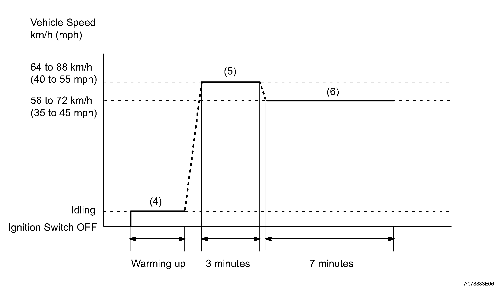
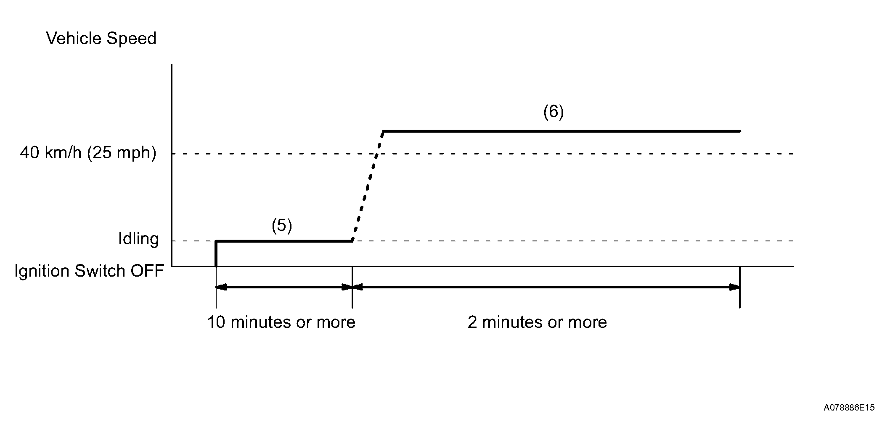

Readiness Monitor Drive Pattern
- PURPOSE OF READINESS TESTS
- The On-Board Diagnostic (OBD II) system is designed to monitor the performance of emission related components, and indicate any detected abnormalities with DTCs (Diagnostic Trouble Codes). Since various components need to be monitored during different driving conditions, the OBD II system is designed to run separate monitoring programs called Readiness Monitors.
- The intelligent tester's software must be version 9.0 or newer to view the Readiness Monitor status. To view the status, enter the following menus: DIAGNOSIS / ENHANCED OBD II / MONITOR INFO / MONITOR STATUS.
- When the Readiness Monitor status reads COMPL (complete), the necessary conditions have been met for running the performance tests for that Readiness Monitor.
- A generic OBD II scan tool can also be used to view the Readiness Monitor status.
HINT:
Many state Inspection and Maintenance (I/M) programs require a vehicle's Readiness Monitor status to show COMPL before beginning emission tests.
The Readiness Monitor will be reset to INCMPL (incomplete) if:
- The ECM has lost battery power or blown a fuse.
- DTCs have been cleared.
- The conditions for running the Readiness Monitor have not been met.
If the Readiness Monitor status shows INCMPL, follow the appropriate Readiness Monitor Drive Pattern to change the status to COMPL.
CAUTION: Strictly observe posted speed limits, traffic laws, and road conditions when performing these drive patterns.NOTE: These drive patterns represent the fastest method of satisfying all conditions necessary to achieve complete status for each specific Readiness Monitor.
In the event of a drive pattern being interrupted (possibly due to factors such as traffic conditions), the drive pattern can be resumed. In most cases, the Readiness Monitor will still achieve complete status upon completion of the drive pattern.
To ensure completion of the Readiness Monitors, avoid sudden changes in vehicle load and speed (driving up and down hills and/or sudden acceleration). - CATALYST MONITOR (Front Heated Oxygen Sensor Type)

Courtesy of © TOYOTA, LICENSE AGREEMENT TMS1002- Preconditions
The monitor will not run unless:
- MIL is OFF.
- Engine Coolant Temperature (ECT) is 75°C (167°F) or higher.
- Intake Air Temperature (IAT) is -10°C (14°F) or higher.
NOTE: The readiness test can be completed in cold ambient conditions (less than -10°C [14°F]), if the drive pattern is repeated a second time after turning the ignition switch OFF. - Drive Pattern
- Connect the intelligent tester to the DLC3.
- Turn the ignition switch ON and turn the tester ON.
- Clear DTCs (if set) (see DTC CHECK / CLEAR ).
- Start the engine, and warm it up until the ECT reaches 75°C (167°F) or higher.
- Drive the vehicle at between 64 km/h and 88 km/h (40 mph and 55 mph) for approximately 3 minutes.NOTE: Drive with smooth throttle operation and avoid sudden acceleration.
If the IAT was less than 10°C (50°F) when starting the engine, drive the vehicle at between 64 km/h and 88 km/h (40 mph and 55 mph) for approximately 3 additional minutes. - Drive the vehicle at between 56 km/h and 72 km/h (35 mph and 45 mph) for approximately 7 minutes.
NOTE: Drive with smooth throttle operation and avoid sudden deceleration that causes the throttle to close fully. - Monitor Status
- Check the Readiness Monitor status displayed on the tester.
- If the status does not switch to COMPL (complete), make sure that the preconditions have been met, and turn the ignition switch OFF. Then, repeat steps (5) and (6) in Drive Pattern above.
- Preconditions
- EVAP SYSTEM MONITOR (KEY OFF TYPE)
- Preconditions
The monitor will not run unless:
- The fuel tank is less than 90% full.
- The altitude is less than 8,000 ft (2,450 m).
- The vehicle is stationary.
- The engine coolant temperature is 4.4 to 35°C (40 to 95°F).
- The intake air temperature is 4.4 to 35°C (40 to 95°F).
- Vehicle was driven in an urban area (or on a freeway) for 10 minutes or more.
- Monitor Conditions
- Turn the ignition switch OFF and wait for 6 hours.
HINT:
Do not start the engine until checking Readiness Monitor status. If the engine is started, the step described above must be repeated.
- Turn the ignition switch OFF and wait for 6 hours.
- Monitor Status
- Connect the intelligent tester to the DLC3.
- Turn the ignition switch ON and turn the tester ON.
- Check the Readiness Monitor status displayed on the tester.
If the status does not switch to COMPL (complete), restart the engine, make sure that the preconditions have been met, and then perform the Monitor Conditions again.
- Preconditions
- Heated Oxygen (HO2) Sensor Monitors (Front and Rear HO2 Sensor Type)
- Preconditions
The monitor will not run unless:
- 2 minutes or more have elapsed since the engine was started.
- The Engine Coolant Temperature (ECT) is 75°C (167°F) or more.
- Cumulative driving time at a vehicle speed of 48 km/h (30 mph) or more exceeds 6 minutes.
- Air-fuel ratio feedback control is performed.
- Fuel cut control is performed for 8 seconds or more (for the Rear HO2 Sensor Monitor).
- Drive Pattern for Front and Rear HO2 Sensors
- Connect the intelligent tester to the DLC3.
- Turn the ignition switch ON and turn the tester ON.
- Clear the DTCs (see DTC CHECK / CLEAR ).
- Start the engine and warm it up until the ECT reaches 75°C (167°F) or higher.
- Drive the vehicle at 48 km/h (30 mph) or more for at least 40 seconds.
- Allow the engine to idle for 20 seconds or more.
- Repeat steps (5) and (6) at least 8 times in 1 driving cycle.
- Change the transmission to 2nd gear.
- Accelerate the vehicle to 48 km/h (30 mph) or more by depressing the accelerator pedal for at least 10 seconds.
- Soon after performing step (9) above, release the accelerator pedal for at least 10 seconds without depressing the brake pedal, in order to execute fuelcut control.
- Allow the vehicle to decelerate until the vehicle speed declines to less than 10 km/h (6 mph).
- Repeat steps from (9) through (11) above at least twice in 1 driving cycle.
- Monitor Status
- Check the Readiness Monitor status displayed on the tester.
- If the status does not switch to COMPL (complete), make sure that the preconditions have been met, and then perform steps from (4) through (12) in the Drive Pattern above.
- Preconditions
- Heated Oxygen (HO2) Sensor Heater Monitors (Front and Rear HO2 Sensor Type)

Courtesy of © TOYOTA, LICENSE AGREEMENT TMS1002- Preconditions
The monitor will not run unless:
- The MIL is OFF
- Drive Pattern
- Connect the intelligent tester to the DLC3.
- Turn the ignition switch ON and turn the tester ON.
- Clear the DTCs (if set) (see DTC CHECK / CLEAR ).
- Start the engine.
- Allow the engine to idle for 10 minutes or more.
- Drive the vehicle at 40 km/h (25 mph) or more for at least 2 minutes.
- Monitor Status
- Check the Readiness Monitor status displayed on the tester.
If the status does not switch to COMPL (complete), restart the engine, make sure the preconditions have been met, and repeat steps (5) and (6) described in the Drive Pattern above.
- Check the Readiness Monitor status displayed on the tester.
- Preconditions